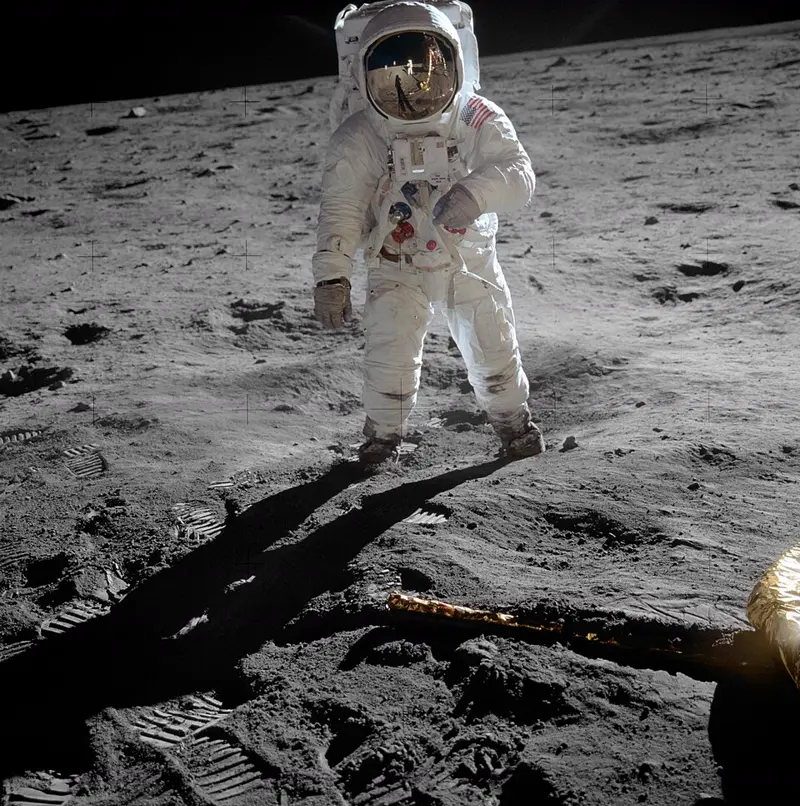
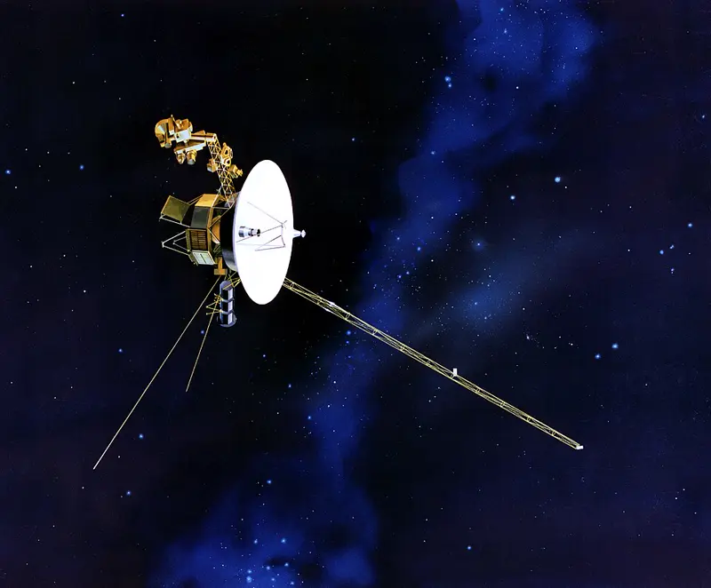
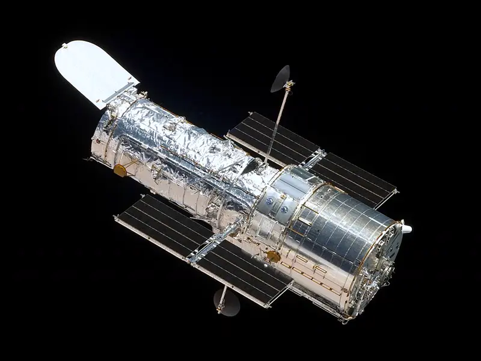
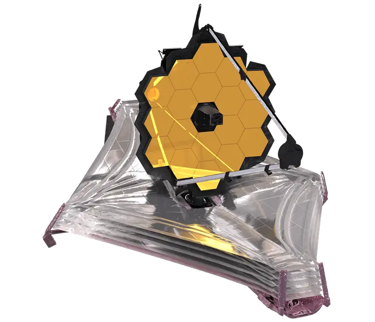

Primeiro satélite artificial, lançado pela União Soviética. Era uma esfera de 58 cm
com quatro antenas que mandava um sinal de rádio (o famoso "bip"). Ficou uns três
meses em órbita. O lançamento dele foi o começo da corrida espacial com os Estados Unidos.
Apollo 11

Buzz Aldrin na Lua, foto tirada pelo Neil Armstrong. Foto: NASA.
Lançamento: 16 de julho de 1969
Foi a primeira vez que pessoas pisaram na Lua. Neil Armstrong e Buzz Aldrin desceram
com o módulo lunar Eagle no dia 20 de julho de 1969, e o Michael Collins ficou em órbita
esperando os dois. Eles passaram umas duas horas e meia andando do lado de fora, pegaram
amostras de rocha e voltaram para a Terra no dia 24.
Voyager 1

Ilustração da sonda Voyager. Imagem: NASA/JPL.
Lançamento: 5 de setembro de 1977
Passou por Júpiter em 1979 e por Saturno em 1980 tirando fotos. Depois seguiu viagem
e em 2012 chegou no espaço interestelar, o primeiro objeto feito por humanos a chegar
lá. Até hoje ainda manda dados para a Terra.
Telescópio Hubble

O Hubble visto do ônibus espacial Atlantis em 2009. Foto: NASA.
Lançamento: 24 de abril de 1990
Fica em órbita da Terra, a uns 540 km de altura. Quando lançaram, descobriram que o
espelho tinha um defeito e as fotos saíam borradas, então em 1993 foram astronautas
lá consertar. Depois disso ele tirou várias fotos famosas e ajudou a calcular a idade
do universo.
Telescópio James Webb

Modelo do telescópio James Webb. Imagem: NASA.
Lançamento: 25 de dezembro de 2021
É o maior telescópio espacial que já foi lançado. Foi feito pela NASA junto com a ESA
(Europa) e a CSA (Canadá). O espelho tem 6,5 m e é dividido em 18 partes. Ele enxerga
no infravermelho e fica a 1,5 milhão de km da Terra, num lugar chamado ponto L2.